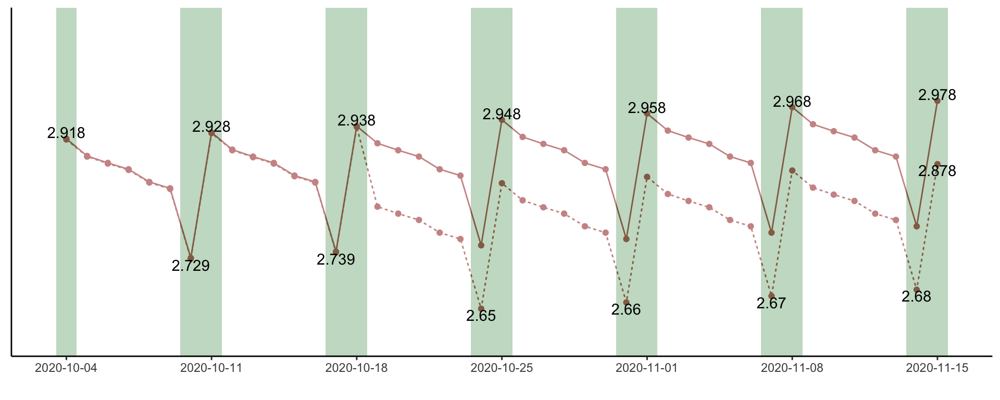

annotation
annotation_max <- function(rawdata) {
rawdata %>%
filter(weekday %in% c(6,7,1,2)) %>%
group_by(date) %>%
filter(did == max(did)) %>%
group_by(week_2) %>%
filter(did == max(did))
}
annotation_min <- function(rawdata) {
rawdata %>%
group_by(date) %>%
filter(did == min(did)) %>%
group_by(week) %>%
filter(did == min(did))
}
Main Plot
main_plot <- function(label){
line_plot =
load_data(label) %>%
mutate(weekend = wday(date, week_start = getOption("lubridate.week.start", 1)) > 5) %>%
ggplot() +
geom_point(aes(x = date, y = did), color = "#990000")+
geom_line(aes(x = date, y = did, linetype=lahuo), color = "#990000")
line_plot +
scale_fill_manual(values = c("white", "#8FBC94")) +
geom_tile(aes(x = date,y = min(did, na.rm = T), height = Inf,fill = weekend), alpha = .3)
}
Anno Plot
anno_plot <- function(label, digit = 1, nudge = 0.02,
ymin = min(annotation_min(load_data(label))$did)*0.8,
ymax = max(annotation_max(load_data(label))$did)*1.2) {
annotate_plot =
main_plot(label)+
geom_text(data = annotation_max(load_data(label)),
aes(x = date, y = did, label = paste0(round(did, digit))),
nudge_y = nudge)+
geom_text(data = annotation_min(load_data(label)),
aes(x = date, y = did, label = paste0(round(did, digit))),
nudge_y = -1 * nudge)+
scale_x_date(breaks = seq(start_date, end_date,by="week"), date_labels = "%Y-%m-%d")+
ylim(ymin, ymax)+
labs(x = "", y = "")
annotate_plot +
theme_bw() +
theme_classic() +
theme(legend.position = "none",
axis.title.y=element_blank(),
axis.text.y=element_blank(),
axis.ticks.y=element_blank())
}
Call Function
kuaishou_dau_plot = anno_plot("Sheet1", nudge = 0.01, ymin = 2.6, ymax = 3.1, digit = 3)
交互
ggplotly(kuaishou_dau_plot)
final
kuaishou_dau_plot
